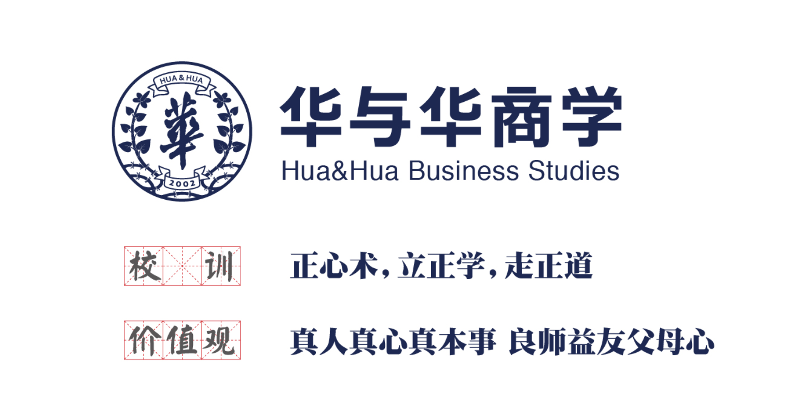
From Talent Development to a Brand-Marketing Knowledge System
H&H Business Studies began with one core belief:Running a company means running an education; its greatest assets are talent and knowledge.
As a brand-marketing consultancy built on knowledge and creativity, Hua & Hua has always invested in internal talent and codifying its methods. H&H Business School was founded on 17 January 2016 as an internal platform for developing strategists, creative professionals and partners. Inspired by leading corporate universities, it turns the company's experience, cases and methods into knowledge that can be learned, replicated and passed on.
After its founding, the school established company-wide study on the first day of every month, combining case reviews, methodology training, industry exchange and practical exercises. Its proprietary '118 Intuition Workshop' became both a creative-production and talent-development mechanism, training employees in Super Signs, brand strategy and creative problem-solving through real business situations. The school also built onboarding programmes, an internal knowledge base and a content system that preserve project experience, client cases and meeting materials as long-term knowledge assets.
With its internal training system established, Hua & Hua began turning corporate knowledge into shared social knowledge. In 2020, Hua & Hua and the Communication University of Zhejiang jointly founded the CUZ-Hua & Hua Super Sign Institute, moving from business experience to theory and then academic education. Research on Super Sign and Brand Triangle theory led to textbooks including Super Sign Theory and Cases, Advertising Appreciation: Fifteen Topics on Super Signs, Super Signs and MIXUE, and A New Theory of Hua & Hua Marketing 4Ps, as well as a Super Sign experimental class that brought brand-marketing methods into university classrooms.
Hua & Hua also shares its methods with more universities through Ministry of Education industry-academia programmes and university-teacher workshops, advancing the academic development of original Chinese brand-marketing theory.
From founding H&H Business School in 2016 and the Super Sign Institute in 2020 to today's integrated system of corporate university, university institute, textbooks, courses and talent development, H&H Business Studies has evolved from internal training into industry knowledge creation.
Hua & Hua aims not only to be an outstanding marketing consultancy, but also a creator of knowledge in brand marketing: putting Super Sign and Brand Triangle theory into university textbooks and taking original Chinese marketing theory to the world.
1. In-Person Courses
H&H Marketing Strategy Implementation Programme
Use the H&H Method to find your company's next growth engine.
Duration3-Day Course
PriceRMB 16800
Focused on business growth, this course systematically teaches strategic tools including Super Signs and the Brand Triangle, helping companies address unclear positioning, weak product growth and inefficient communication.
Core Curriculum
- Build a Brand Triangle: identify reasons to buy and create brand assets.
- Optimise the product portfolio: find growth opportunities and build hero products.
- Build a key-media strategy: improve communication efficiency.
- Identify key growth actions: define the path for future growth.
Who It Is For Founders and core management teams seeking to overcome growth bottlenecks and define strategic direction.
Instructors
Hua & Hua Strategy and Practice Faculty
Sam Hua
Chairman of Hua & Hua
Founder of Hua & Hua and noted writer on business, history and philosophy; author of Super Sign Is Super Creativity, The H&H Method, Sam Hua Explains The Art of War and Sam Hua Explains Zizhi Tongjian.
Xu Yongzhi
Partner, Hua & Hua
- Master's degree from Tsinghua University and CEIBS EMBA; 13 years of hands-on strategic brand-marketing experience.
- Helped more than 40 companies reshape their strategic brands and grow sales.
Zhou Qingyi
Partner Designate, Hua & Hua
Created the Four-Quadrant Product Selection Method and helped Chubang build a hero-product triangle across soy sauce, oyster sauce and gift boxes, growing from RMB 1 billion to RMB 5 billion.
Xia Mingyang
Senior Project Director, Hua & Hua
- Fourteen years of FMCG experience, leading integrated strategy, creative execution and channel implementation.
- Specialises in reasons to buy, product development and continuous improvement; has helped clients triple point-of-sale volume.
Jiang Chengshu
Project Director, Hua & Hua
- Brand-promotion specialist focused on packaging, campaign planning, advertising and channel recruitment.
- Multiple winner of Hua & Hua annual brand-promotion awards.
Liu Zeguo
Project Director, Hua & Hua
- Proposed customer lifetime transaction value as the key e-commerce metric for Yuanming Laojiu, which grew from RMB 400 million to RMB 1.5 billion during the engagement.
- Secretary-General of the Hua & Hua TPS Office.
How to Enrol
Enrolment Enquiries: Course Details and Current Offers
- 01Review the course details
- 02Scan the enrolment QR code
- 03Add a course adviser
2. Online Courses
Learn the H&H Method Online
Choose by learning theme, from founder-led methodology and public lectures to practical courses by leading instructors.
01
Founder Masterclasses
5 Courses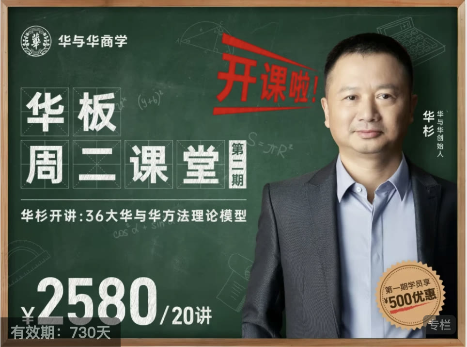
¥2580
Sam Hua's Tuesday Class, Season 2: 36 H&H Method Models
Sam Hua explains 36 major H&H Method models. Learn what Hua & Hua employees learn.
View Course >¥1980
Online Brand-Marketing Course: Sam Hua's Tuesday Class
Hua & Hua's internal training opens to the public for the first time. Learn what our employees learn.
View Course >¥2999
The H&H Method and Case History
Twelve live sessions covering all 188 Hua & Hua cases since the company was founded, explained one by one.
View Course >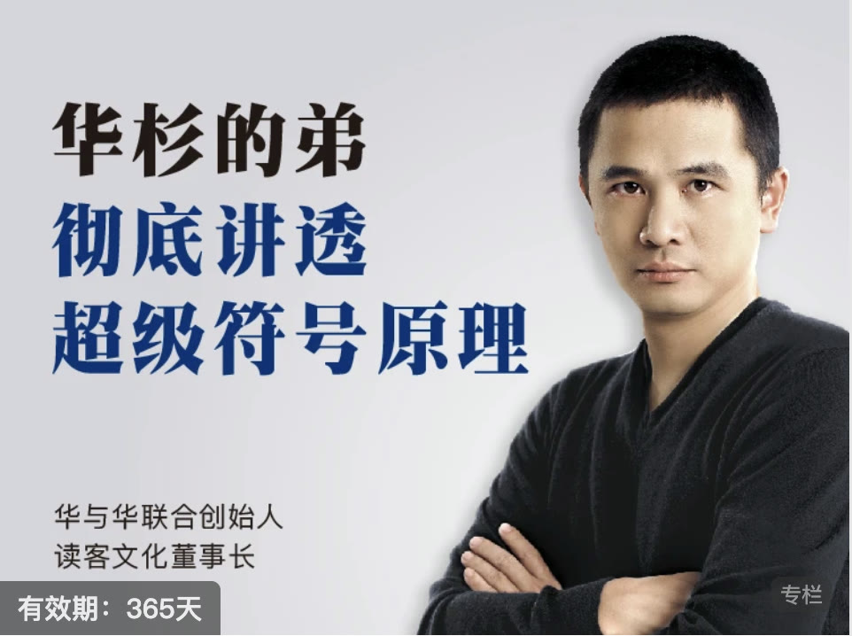
¥1299
Nan Hua Explains Super Sign Theory
Master Super Sign Theory, apply the 16-character brand formula and build your own creative method.
View Course >¥1999
Sam Hua Explains 24 Hua & Hua Cases
Twenty-six lessons based on 24 selected Hua & Hua cases.
View Course >02
Hua & Hua Explained
10 Courses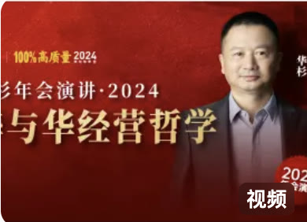
Free
Hua & Hua Business Philosophy
Sam Hua's keynote at the 2024 Hua & Hua annual meeting.
View Course >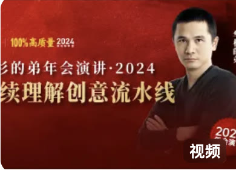
Free
Continually Understanding the Creative Pipeline
Nan Hua's keynote at the 2024 Hua & Hua annual meeting.
View Course >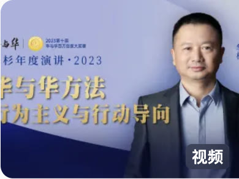
Free
The H&H Method: Behaviourism and Action Orientation
Sam Hua's 2023 annual address.
View Course >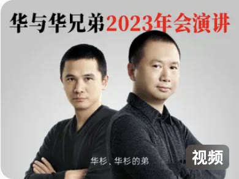
Free
2023 Hua & Hua 'Keep Going' Annual-Meeting Keynote
A joint address by the Hua brothers.
View Course >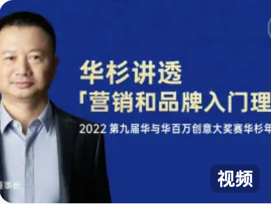
Free
Fundamentals of Marketing and Branding
Sam Hua explains the fundamentals of marketing and branding.
View Course >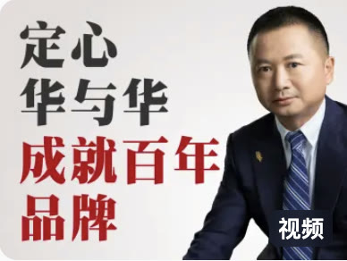
Free
Commit to Hua & Hua, Build a Century-Long Brand
Sam Hua explains the long-term method for building an enduring brand.
View Course >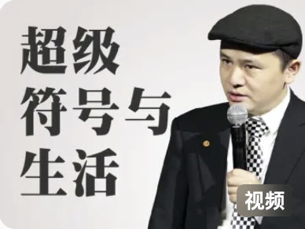
Free
Super Signs and Everyday Life
Nan Hua explains how Super Signs enter everyday life.
View Course >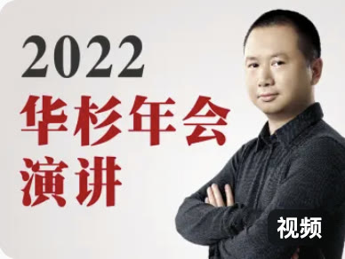
Free
2022 Hua & Hua 'Do the Hard Work' Annual-Meeting Keynote
Sam Hua's keynote at the 2022 annual meeting.
View Course >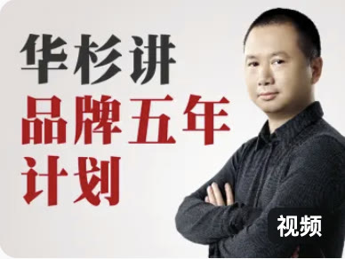
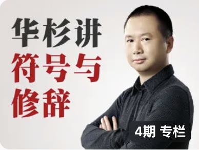
¥39.9
Signs and Rhetoric: Building a Super Fashion Brand with Super Signs
Explains how to build a fashion brand with Super Signs through the lens of signs and rhetoric.
View Course >03
Hua & Hua Expert Instructor Series
5 Courses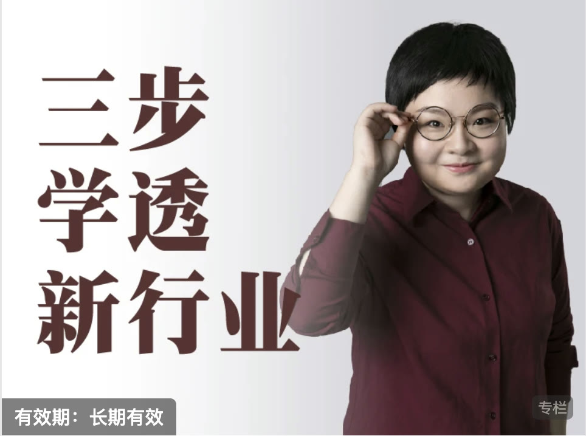
¥29.90
Chen Jun: Master a New Industry in Three Steps
Hua & Hua partner Chen Jun teaches how to master a new industry in three steps.
View Course >¥29.90
Xu Qiancheng: How to Design a Profitable Store
Hua & Hua Design Group Director Xu Qiancheng explains how to design a profitable store.
View Course >¥299
Super Search and Organisation for Packaging References
A nine-lesson design foundation course. Judgement is the first productive force: learn to identify the essence in research materials.
View Course >¥399
Super Search and Organisation for Product Research
A seven-lesson marketing foundation course. At Hua & Hua, the research process is often more important than the formal creative work.
View Course >¥399
Hua & Hua Product Development Super Case Course
Nine practical lessons in product creativity, using eight major cases and four processes to build product-development capability.
View Course >3. Academic Research
Hua & Hua × Communication University of Zhejiang
Turning Corporate Methodology into University Textbooks
Hua & Hua's academic research has a clear goal: transform methods accumulated through brand strategy and creative practice into original Chinese marketing knowledge that can be studied, taught and passed on. In 2020, Hua & Hua and the Communication University of Zhejiang jointly founded the Super Sign Institute, advancing theoretical research, textbook publishing, talent development and university outreach under the principle of university-enterprise collaboration and unity of knowledge and action.
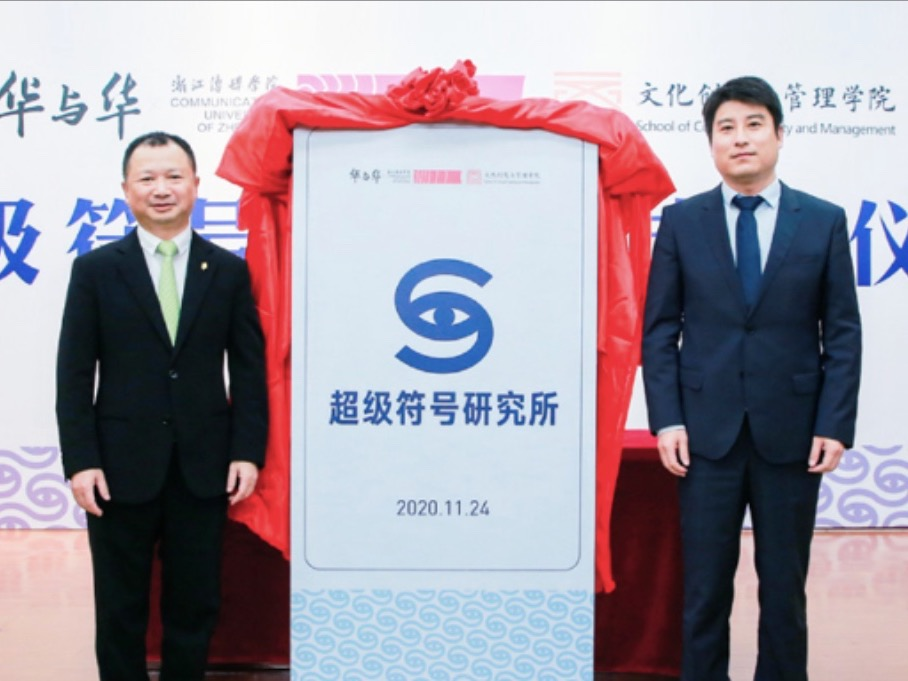
The Super Sign Institute Is Founded
The collaboration began when university teachers attended Hua & Hua's Super Sign brand course. After several workshops, the partners agreed in 2020 on 'one book and one class': a continuing textbook programme and a Super Sign experimental class. The CUZ-Hua & Hua Super Sign Institute was formally founded that November, launching a long-term plan to convert business experience into academic theory and university teaching.
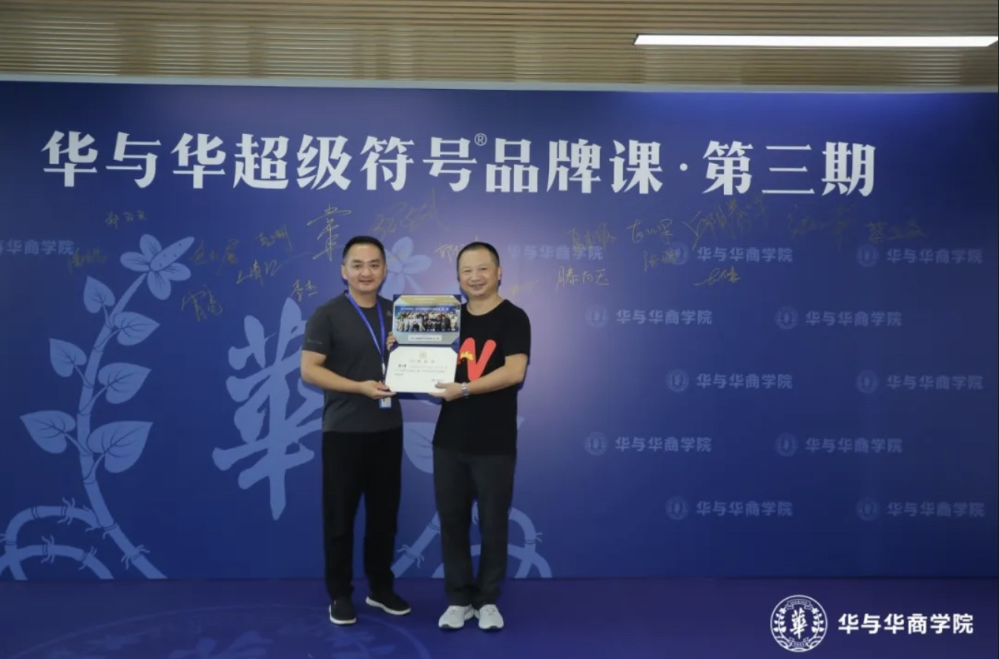
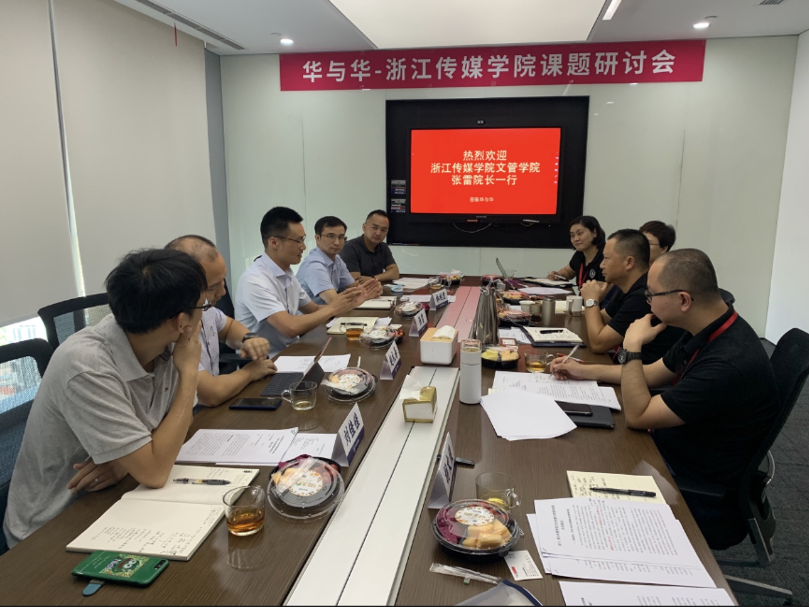
From Experience to Theory, and Theory to Textbooks
The research team continually studies Super Signs, the Brand Triangle and marketing practice, turning Hua & Hua's case experience into structured knowledge. Four textbooks now form a content system spanning cases, theory and classroom teaching: Super Sign Theory and Cases, Advertising Appreciation: Fifteen Topics on Super Signs, Super Signs and MIXUE, and A New Theory of Hua & Hua Marketing 4Ps.
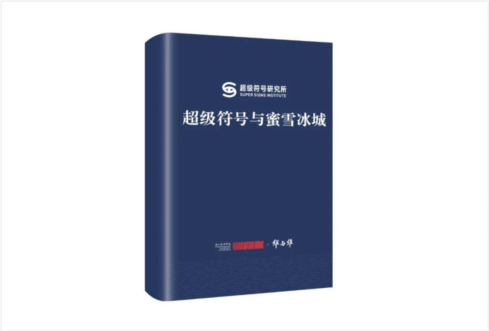
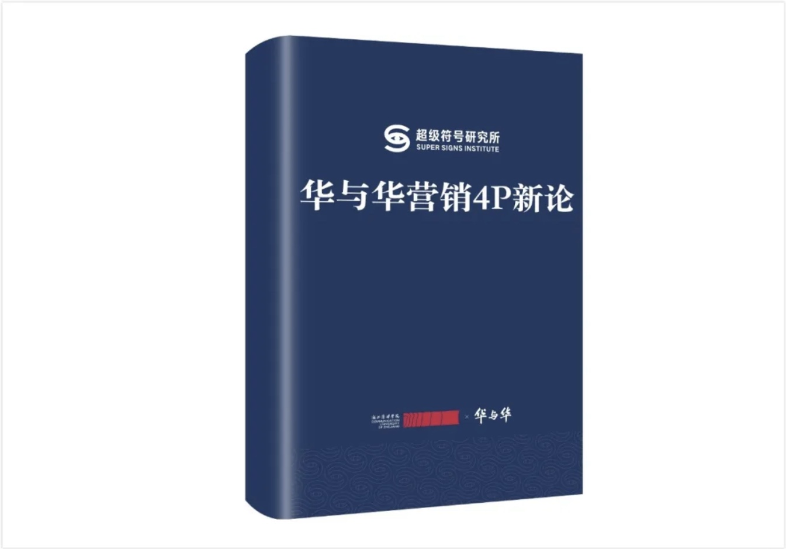
Four Stages of the Super Sign Experimental Class
The first experimental class began with 17 students. It progressed from an extracurricular interest group into a credit-bearing short-term programme, then added summer training and Hua & Hua internships, and finally became a cross-disciplinary programme for undergraduate and graduate students together. In 2024, the partners received approval for a Zhejiang Provincial Joint Graduate Training Base, extending the collaboration from undergraduate to master's education.
- 1.0Extracurricular Interest Class
- 2.0Credit-Bearing Programme
- 3.0Summer Practical Training
- 4.0Joint Undergraduate and Graduate Class
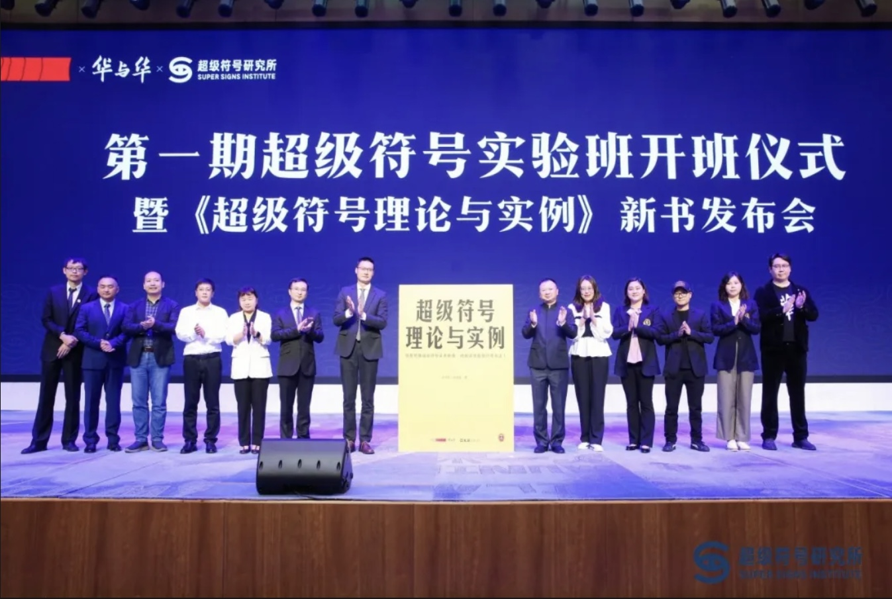
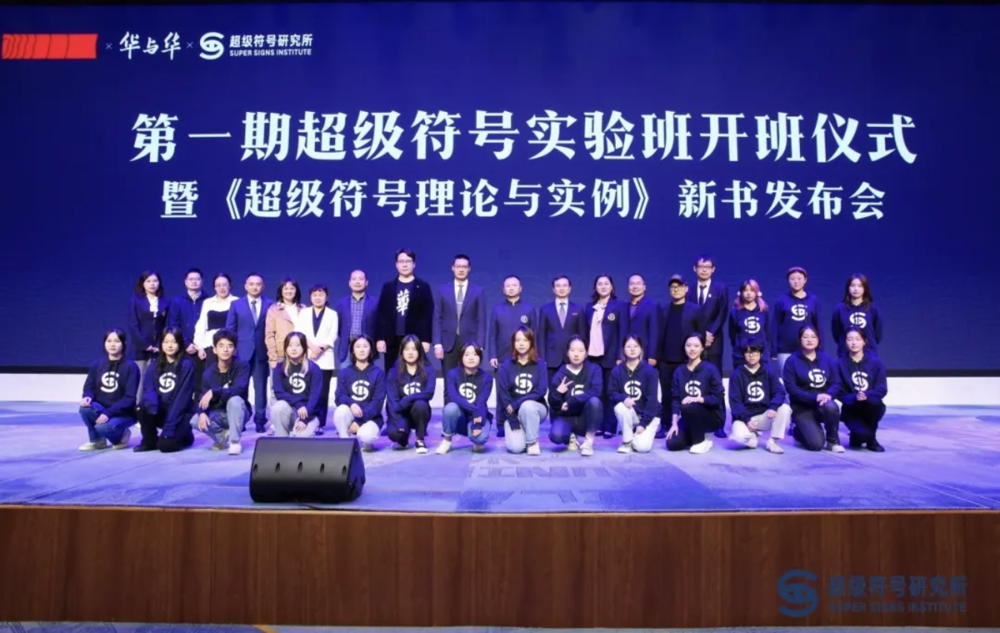
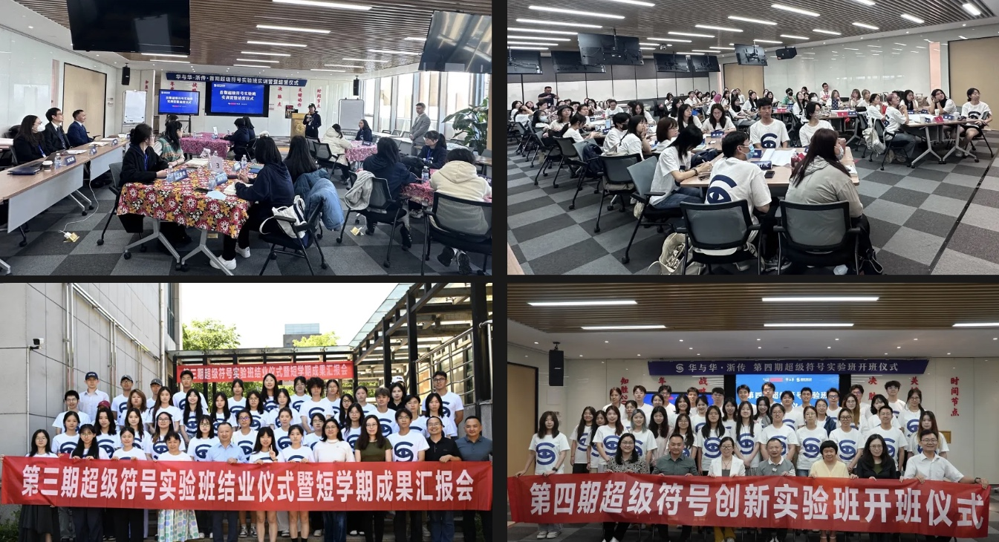
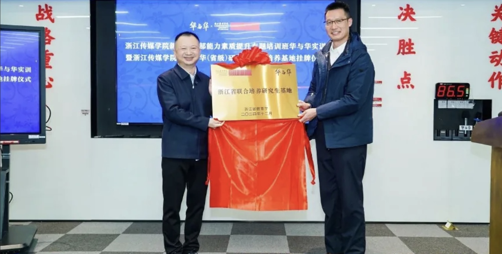
From One University to Classrooms Nationwide
In 2024, Hua & Hua joined the Ministry of Education's industry-academia collaborative education programme, advancing integration through curriculum reform and teacher training while co-building brand-management experimental classes with universities. In 2025, the first public-interest summer Super Sign workshop for university teachers was held in Shanghai, attracting nearly one hundred teachers nationwide and bringing business methodology into more classrooms through joint curriculum design and faculty development.
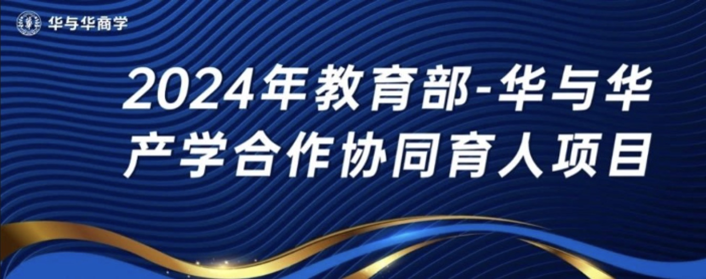
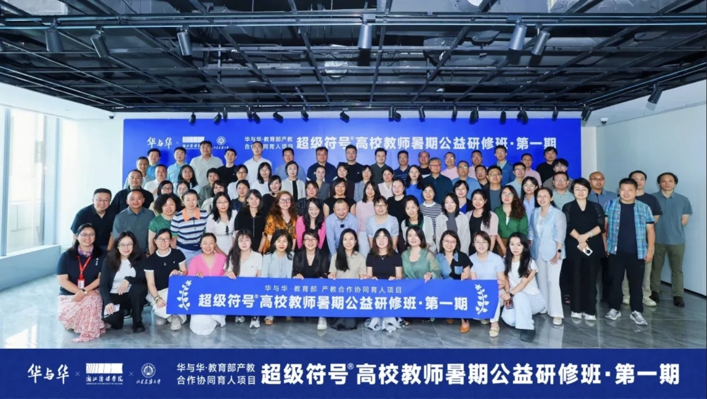
Practical Experience→Theoretical System→Academic Knowledge
From the institute and textbooks to experimental classes, the joint training base and nationwide university programmes, Hua & Hua is building a complete path from corporate experience to shared social knowledge, making Super Sign and Brand Triangle theory sustainable subjects of research and teaching as original Chinese marketing knowledge.